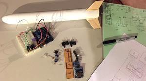
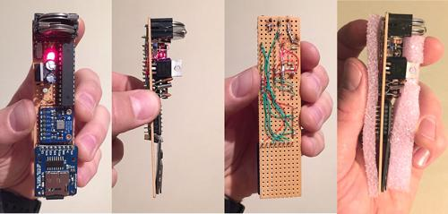
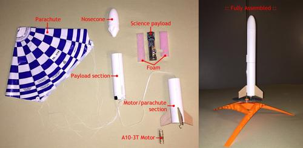
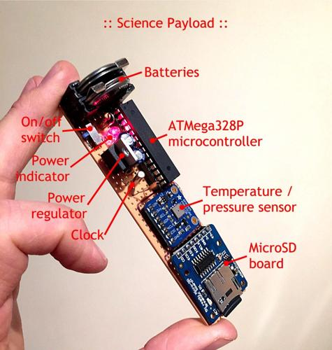
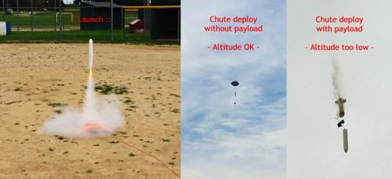
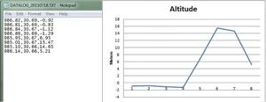

Seeded by my lifelong love of all things space, technology, and science, and inspired by the amazing computer game Kerbal Space Program, I decided to build my own rocket – complete with a science experiment!
I had previously designed and built my own rover in an attempt to (crudely) mimic real-life planetary exploration missions like the Mars rovers. My rover was named “Adena” after some of the earliest known cultures living in Ohio. That project was extremely fun and rewarding, albeit provincial. So to me, the next logical step was to slip the surly bonds of Earth and construct a rocket.

Sticking with the theme of early native Ohio cultures, I named the rocket “Hopewell 1.” It’s basically constructed out of two store-bought model rocket kits modded and spliced together with a custom electronics payload that logs temperature and pressure data. These data can then be used to determine the rocket’s altitude. The idea was to turn on the data logger, launch and recover the rocket, and retrieve the log file from the MicroSD card.

The science payload is built with four, three volt Lithium batteries for power, on/off switch, LED power indicator, power regulator circuit, clock circuit, BMP085 temperature/pressure sensor, MicroSD card breakout board, and an ATMega328P microcontroller placed in perfboard and soldered and wire wrapped. The microcontroller is from an Arduino Uno and programmed with open-source and custom software. The code is written so that a temperature and pressure reading is taken every second and written to a simple csv text document on the MicroSD card.

Other than a couple model rocket kit ‘adventures’ as a child, I have had zero experience with building working rockets. I chose the ‘Mini Fat Boy‘ Estes rocket kit basically because it had the widest diameter I could find at the store, allowing for the science payload; it wouldn’t fit in any other rocket. Plus it was small and frankly, I didn’t want to launch it so high that I’d never get it back. After realizing it was too small, I bought another one, modded it to fit atop the first one, and crossed my fingers it would fly.

Given the weight of the rocket and the tiny rocket motor used – and the inexperience of the rocket designer – I gave it a 15% chance of actually flying. The first launch attempt was made without the payload in an effort to lighten the load and to save the electronics in case of a catastrophic failure. To my surprise, it worked flawlessly! It launched to about 100 feet in the air, deployed the parachute, and drifted safely back down. I decided to try again, this time with the science payload…
Again, to my surprise, it worked! …sort of. Technically, it worked flawlessly. The problem was that since it was much heavier, it only went about half as high (~45 feet) and the chute didn’t deploy until the rocket was speeding towards the earth at about 10 feet off the ground. It unfortunately slammed into the dirt. Amazingly, the rocket itself was unharmed however the electronics seemed to not function anymore. I gathered up my first venture into rocketry and headed home. I just hoped the data was salvageable…

And it was! I inserted the MicroSD card into my computer and instantly saw that shiny new log file waiting for me. It had logged about two minutes worth of data with the last five seconds representing the actual flight information before abruptly stopping, marking the moment the rocket smashed into the ground. Sweet, sweet science victory…

I estimate the entire project took around two full weeks worth of evenings filled with research, design, construction, and documentation (I had to learn TinyCAD to draw the schematics). Although, those two weeks were spread over a few months – I just can’t stay focused on one thing that long! It was a lot of fun and I’m already in the midst of redesigning the rocket to take me even higher!